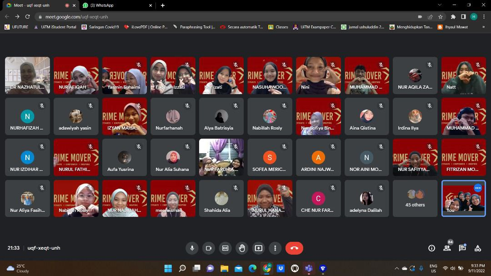
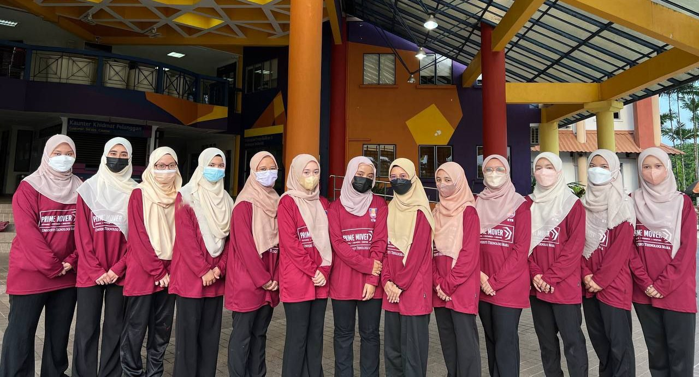
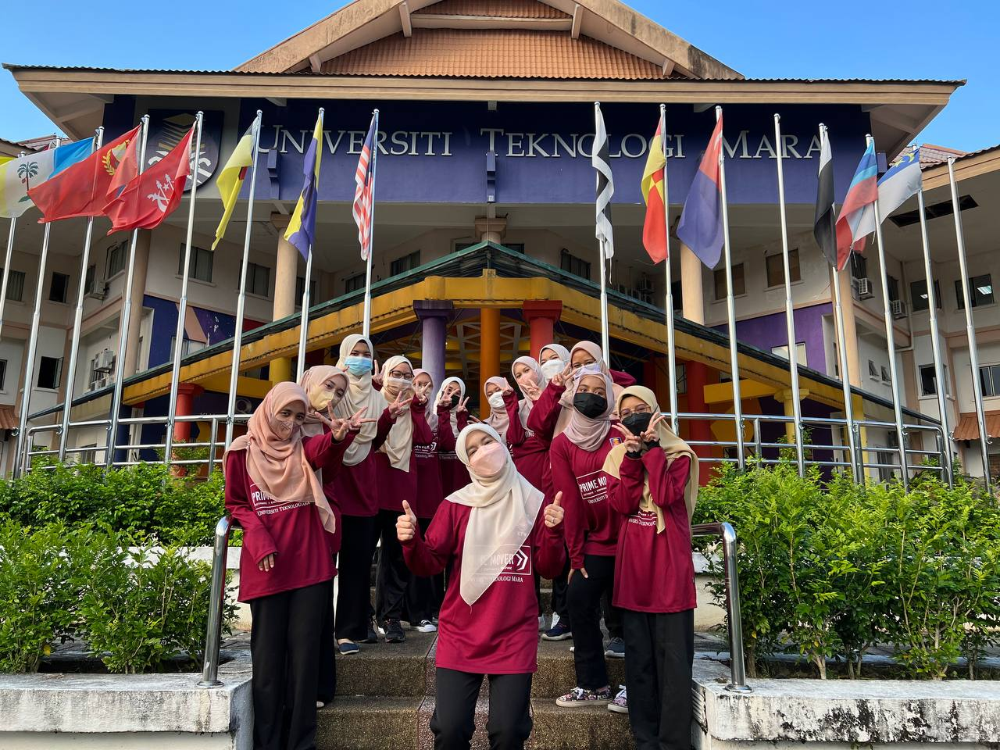
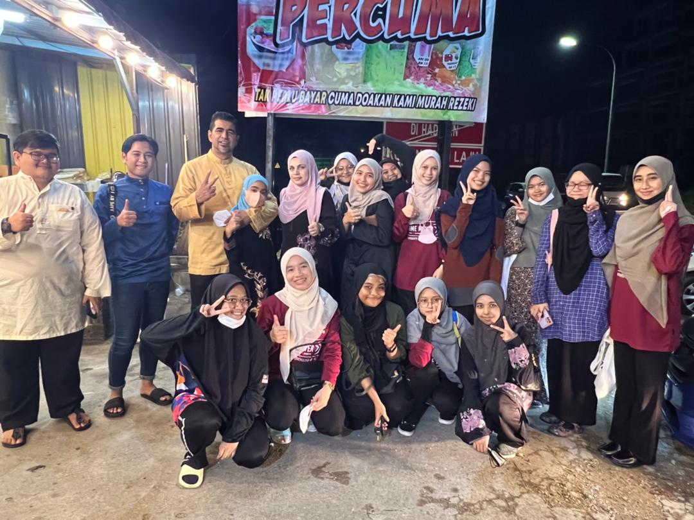
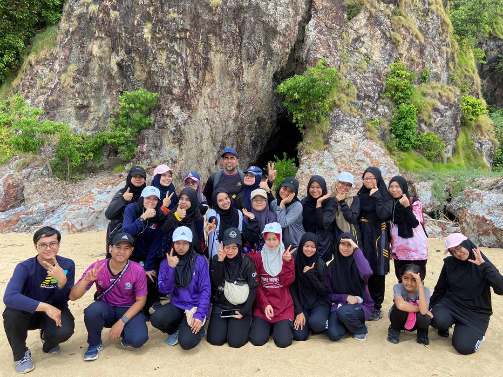
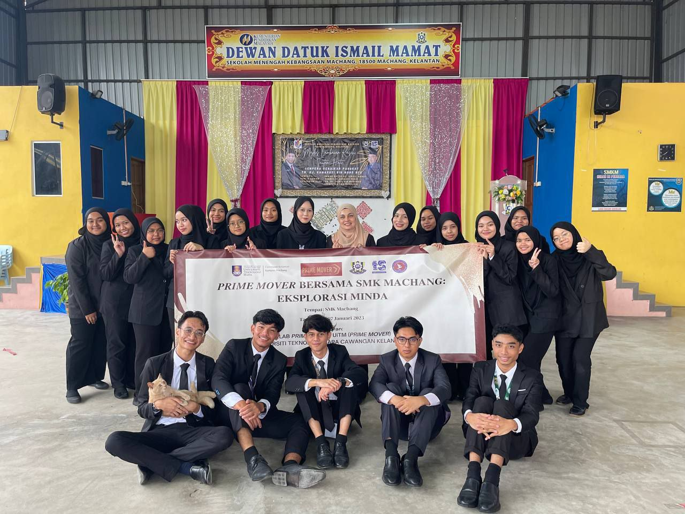
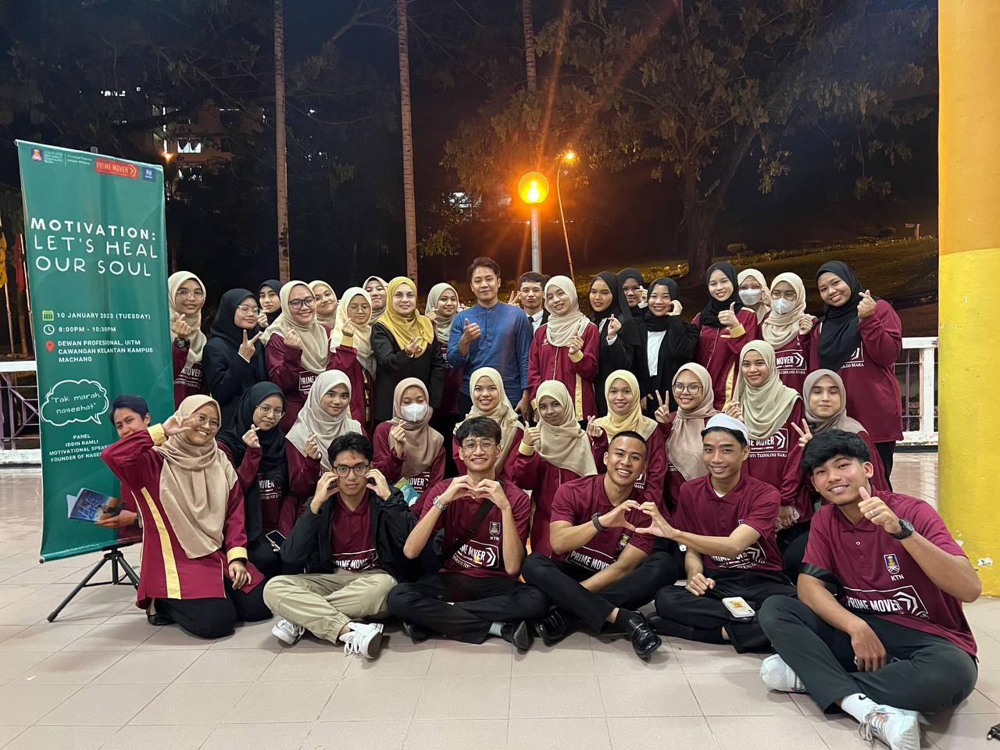
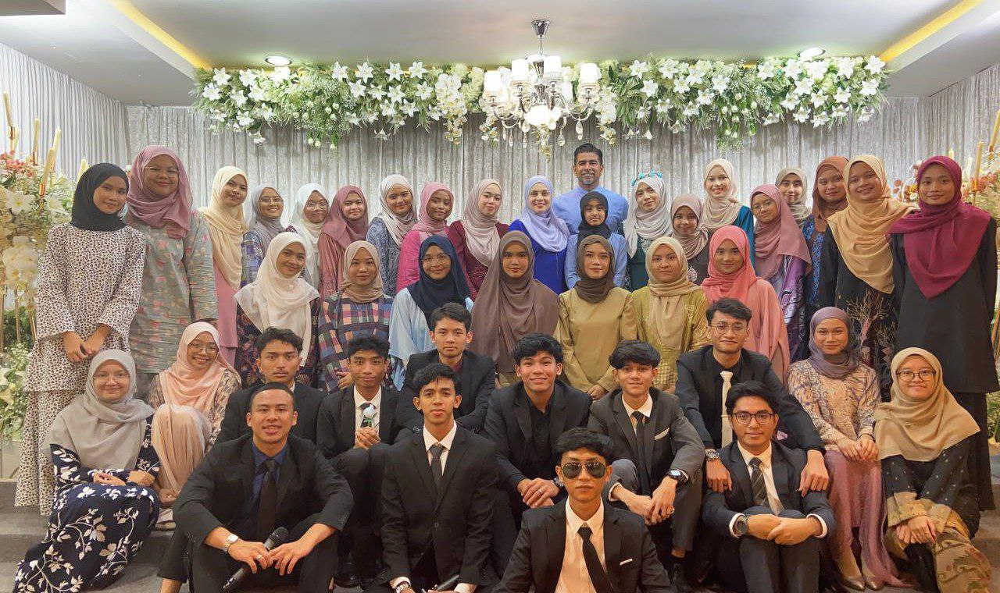
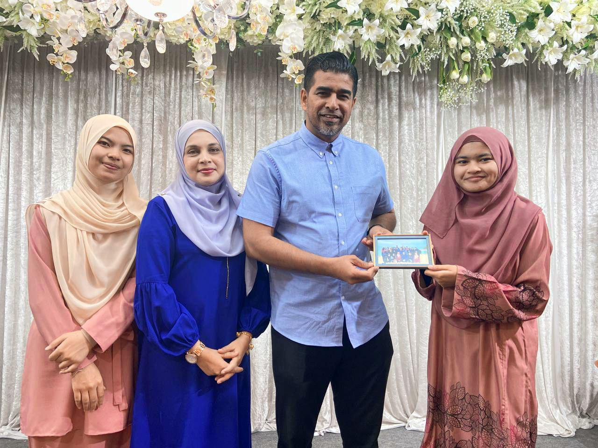

I joined the Prime Mover club when I was in Diploma semester 3. I know about this club through my friend. My main purpose in joining this club is to improve my basic skills and gain experience. I was appointed as exco event management whose duty is to manage a program. Until the 5th semester, many experiences I got when joining this club and I was also able to improve my basic skills.
My Experiences
ONLINE PROGRAM

Due to the covid-19 epidemic, online distance learning was conducted, the programs that were made were also conducted online. There are many online programs that are done in this club such as Achievers: Let's Make Things Happen, Stop Wasting Your Time, Let's Make Money, and many more. Even though it was conducted online, many skills I gained such as managing the streamyard during the online program.
FIRST MEET


This was the first time we met each other face to face and took pictures in front of the UiTM Machang administration foyer.
Iftar with Prime Mover Family

All Prime Mover committees have iftar with Prime Mover club advisors.
Face-to-face program for the first time after the covid-19 epidemic subsided

This is a face-to-face program for the first time after the covid-19 outbreak subsides. This program is the Trigger Mindscape Day program which is a program with Prime Mover members that is conducted in Bukit Keluang and we climbed Keluang hill together.
PRIME MOVER BERSAMA SMK MACHANG: EKSPLORASI MINDA

This program is conducted at SMK Machang in January 2023. This is my first experience as a facilitator. Through this program, it made me independent, have better communication, and more courage to face many people.
MOTIVATION: LET'S HEAL OUR SOUL

This program was held at the Dewan Pro of UiTM Machang and the participation of 1000 people. The invited guest is Iddin Ramli who is a famous motivator. My task in this program is to operate the live streamyard that is displayed on the Dewan Pro screen.
Dinner with Prime Mover


Dinner with Prime Mover is the last meeting of us Prime Mover committee members for session 21/22 who have resigned. So, this is the last meeting with newly appointed committee members for session 22/23 and Prime Mover advisors. This dinner is done at Restaurant Selera Tepi Sungai, Tanah Merah. Therefore, many sweet memories and experiences during my time in this club and I will never forget this club.
About Me
Hi!
I'm Sofiya, a student Diploma from UiTM Machang and currently in the last semester. This personal website is for my IMD311 assignment and I hope you enjoy this website! Thank you.
Before that, why not listen to instrumental music first?🤩